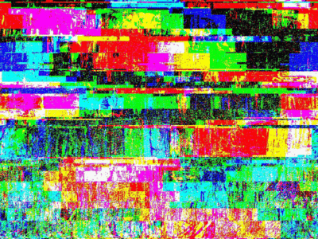

實驗日誌實驗日誌
記錄顯示：系統完整性已受損，數據流異常。
實驗對象實驗對象
受試者 A

狀態：已適應，但意識正在消退。
備註：似乎對刺激沒有反應，但眼球運動異常。
預計死亡日期：[未確定]
受試者 B
狀態：不穩定，有攻擊性傾向。
備註：需要額外的監控，避免直接眼神接觸。
預計死亡日期：[未確定]
[缺失]
狀態：[數據遺失] - 但仍有微弱生命跡象。
備註：[數據遺失] - 聽到微弱的呼救聲。
視覺記錄視覺記錄
檔案已損壞，但仍可辨識出部分內容：

警告：圖像可能引發不安。
異常現象異常現象
未記錄的事件正在增加，系統無法解釋：
- 時間：██:██:██ - 受試者 A 在睡眠中說出無法理解的語言（反向播放），內容與未來事件相關。
- 時間：██:██:██ - 監測設備顯示短暫的能量爆發，但沒有明顯的來源（頻率：666 Hz），伴隨低語。
- 時間：██:██:██ - 受試者 B 聲稱看到... "另一個人"，但鏡子中沒有反射。牆壁上出現抓痕。
- 時間：██:██:██ - 所有受試者同時醒來，面向同一個方向（北方），並發出同步的低吼聲。
- 時間：██:██:██ - 在實驗區域檢測到異常的重力波動（-0.02 G），導致物體短暫懸浮。
- 時間：██:██:██ - 環境溫度驟降至冰點，隨後迅速回升，無明顯原因。
心電圖監測心電圖監測
實時生命體徵監測：數據不穩定。